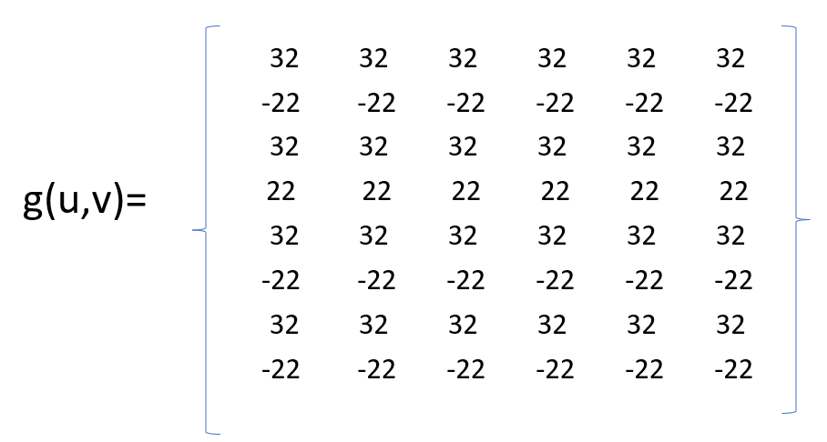
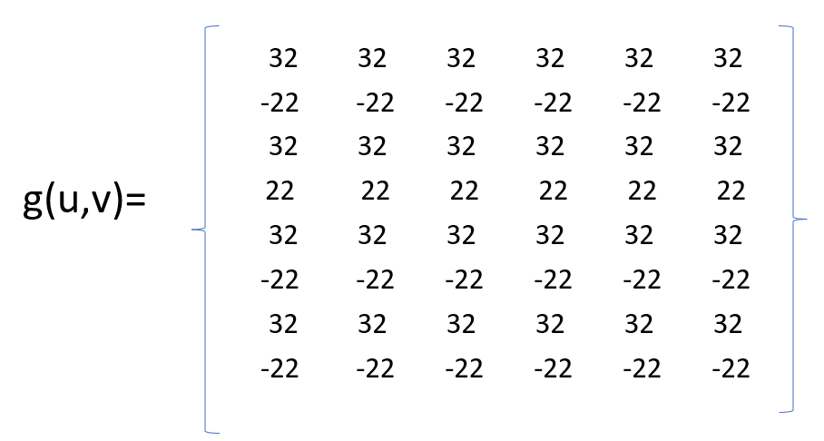

Exercicio sobre a aula Introdução à Codificação Visual
a) Na linha 1:
- escolha apenas uma grandeza entre as “Medidas físicas da luz” e encontre um exemplo prático de especificação desta grandeza (com a unidade correta);
- escolha um elemento entre os “Elementos do Olho Humano” o explique sua função na Visão Humana;
- pesquise sobre uma das regiões listadas no “Córtex Visual Humano
A iluminância é uma grandeza que descreve a quantidade de luz que incide em uma determinada área. Ela mede a quantidade de energia luminosa (fluxo luminoso) que atinge uma superfície por unidade de área. A unidade padrão de medida da iluminância é o lux (símbolo: lx), que é equivalente a um lúmen por metro quadrado (1 lx = 1 lm/m²). A iluminância é uma grandeza importante em diversas aplicações, como design de iluminação, engenharia elétrica, arquitetura e ergonomia, pois ela influencia diretamente a visibilidade e o conforto visual em um ambiente. Aqui está um exemplo prático de especificação da iluminância: Suponha que você está planejando a iluminação para um escritório e deseja alcançar uma iluminância adequada nas áreas de trabalho para garantir que os funcionários tenham condições ideais para realizar suas tarefas. As diretrizes recomendam uma iluminância mínima de 500 lux para um escritório de trabalho geral.
A pupila é a parte central e escura do olho humano localizada no centro da íris. Sua função principal é regular a quantidade de luz que atinge a retina, protegendo-a da exposição excessiva à luz intensa ao se contrair em ambientes claros e dilatar em ambientes escuros. Além disso, a pupila contribui para a acomodação visual, ajustando-se para ver objetos em diferentes distâncias. Em resumo, a pupila desempenha um papel essencial na adaptação à luz e na qualidade da visão humana.
A região V1, também conhecida como córtex visual primário ou área visual primária, é uma parte fundamental do córtex cerebral humano que desempenha um papel crucial no processamento visual. Ela está localizada na parte posterior do cérebro, na região occipital, e é uma das primeiras áreas corticais a receber informações visuais diretas dos olhos através do nervo óptico. A região V1 é responsável por processar informações visuais básicas, como a detecção de bordas, contornos, cores, movimento e orientação de objetos. Ela atua como um centro de processamento primário para a percepção visual e desempenha um papel fundamental na construção das representações iniciais do que vemos. Aqui estão alguns aspectos importantes da região V1 do córtex visual humano: Mapeamento Retinotópico: A região V1 é organizada de forma retinotópica, o que significa que as células na V1 respondem seletivamente a estímulos visuais em locais específicos no campo visual. Isso permite que o cérebro crie uma representação topográfica detalhada do que está sendo visto. Hierarquia Visual: A informação visual processada na V1 é subsequentemente transmitida para outras áreas do córtex visual em um sistema hierárquico. À medida que as informações avançam para áreas superiores, como V2, V3, e assim por diante, ocorre um processamento cada vez mais complexo, resultando na percepção consciente de objetos, faces e cenas. Discriminação de Características Visuais: A V1 é especializada na discriminação de características visuais simples, como a orientação de linhas, e pode detectar diferenças sutis nessas características. Integração de Informações: A região V1 também está envolvida na integração de informações visuais, o que ajuda a construir percepções mais complexas, como a detecção de movimento e a organização de elementos visuais em objetos reconhecíveis. Plasticidade Visual: A região V1 é suscetível à plasticidade cerebral, o que significa que pode se adaptar e reorganizar em resposta a mudanças nas condições visuais, como a cegueira temporária ou a recuperação da visão. Em resumo, a região V1 do córtex visual humano é uma parte crucial do processamento visual inicial, onde informações visuais básicas, como bordas, cores e orientações, são processadas e enviadas para áreas superiores do córtex para análise mais complexa e percepção consciente. Ela desempenha um papel fundamental na nossa capacidade de compreender o mundo visual ao nosso redor.
a) Na linha 2:
- Escolha qualquer uma entre as três propriedades e explique-a com um exemplo prático.
A visão estereoscópica, ou visão estéreo, é a capacidade do sistema visual humano de perceber a profundidade e a tridimensionalidade dos objetos no ambiente com base nas diferenças nas imagens captadas por ambos os olhos. Essa habilidade é uma consequência do fato de que nossos olhos estão posicionados ligeiramente separados em nosso rosto, o que resulta em cada olho capturando uma imagem ligeiramente diferente da mesma cena. O cérebro combina essas imagens para criar uma percepção de profundidade e distância. Exemplo prático da visão estéreo: Um exemplo prático de visão estéreo é o uso de óculos 3D em cinemas ou na realidade virtual. Quando você assiste a um filme em 3D ou joga um jogo de realidade virtual com óculos especiais, cada olho recebe uma imagem ligeiramente diferente projetada na tela. Essas imagens são projetadas de maneira a criar uma disparidade binocular controlada. Quando você usa os óculos, seu cérebro combina essas imagens e cria a ilusão de que os objetos na tela têm profundidade e estão "saindo" da tela em direção a você. Isso proporciona uma experiência tridimensional e imersiva.
Exercicio sobre a aula Introdução à Codificação Visual

Calculando temos:
 

...